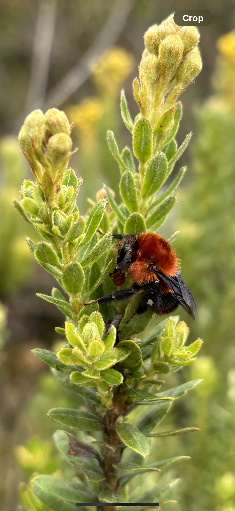
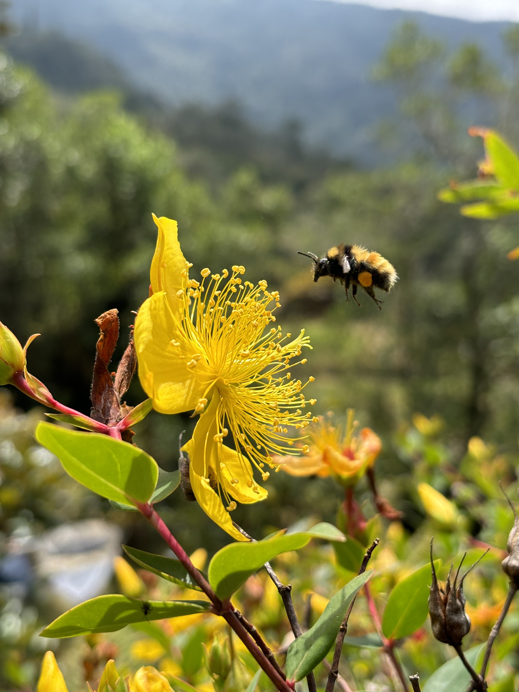
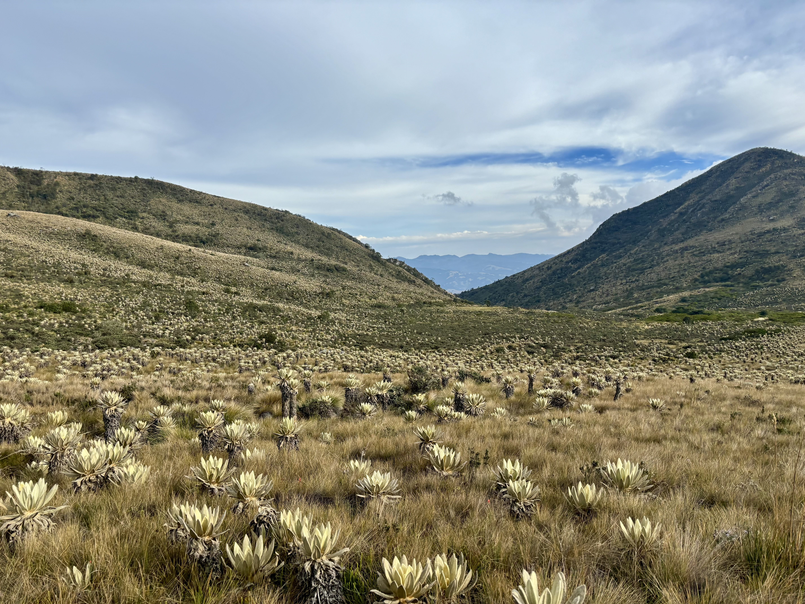
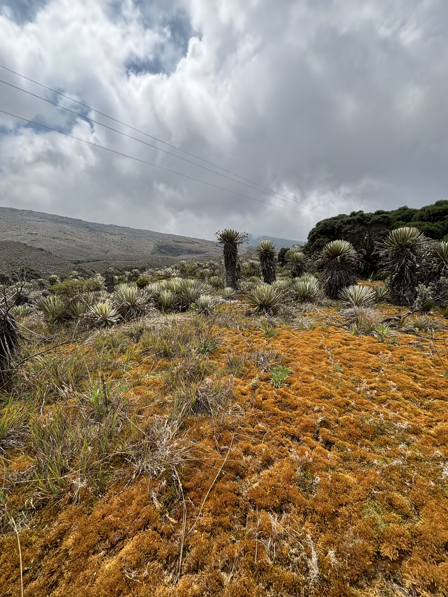
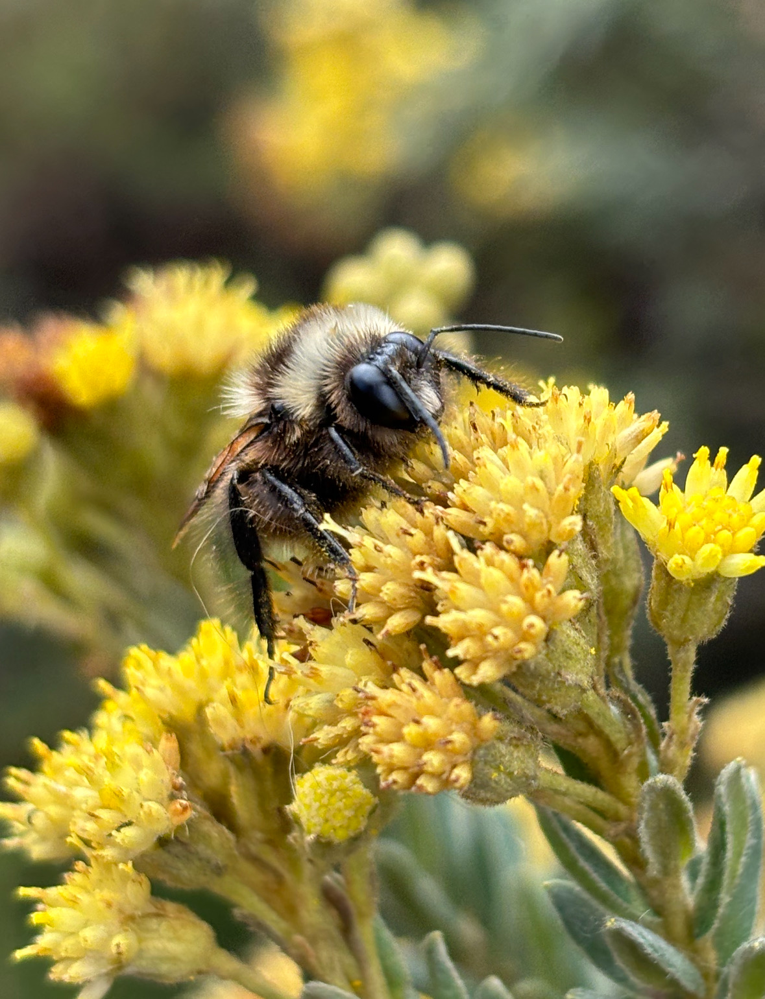
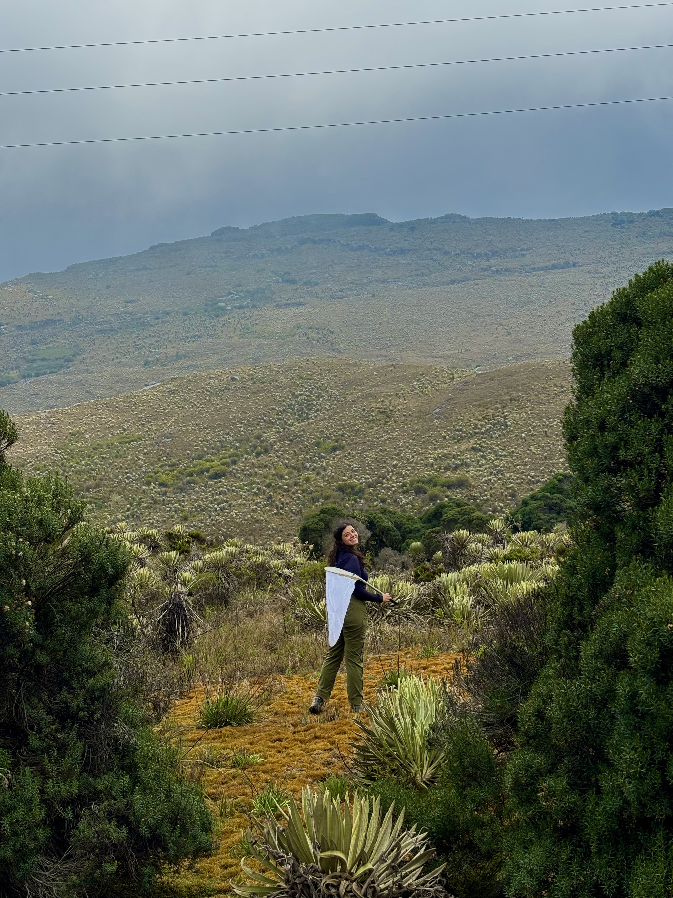
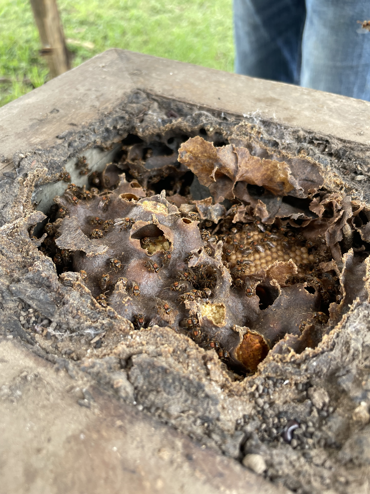
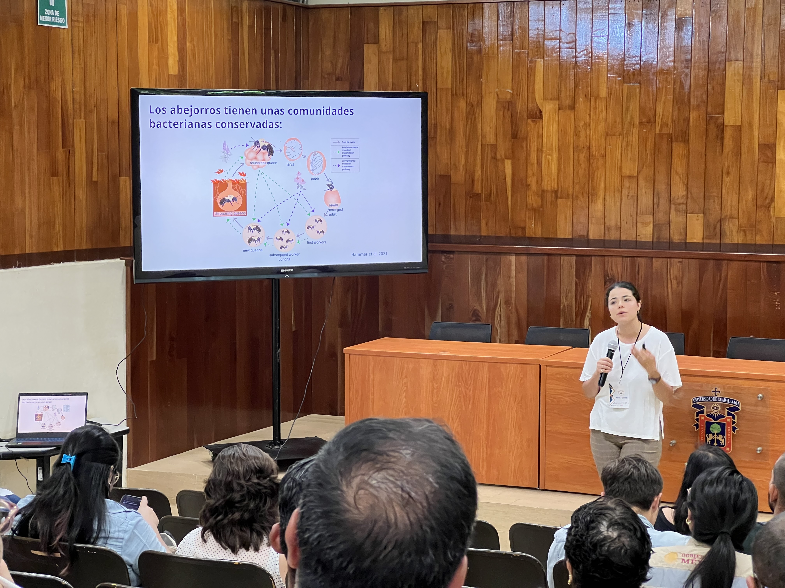
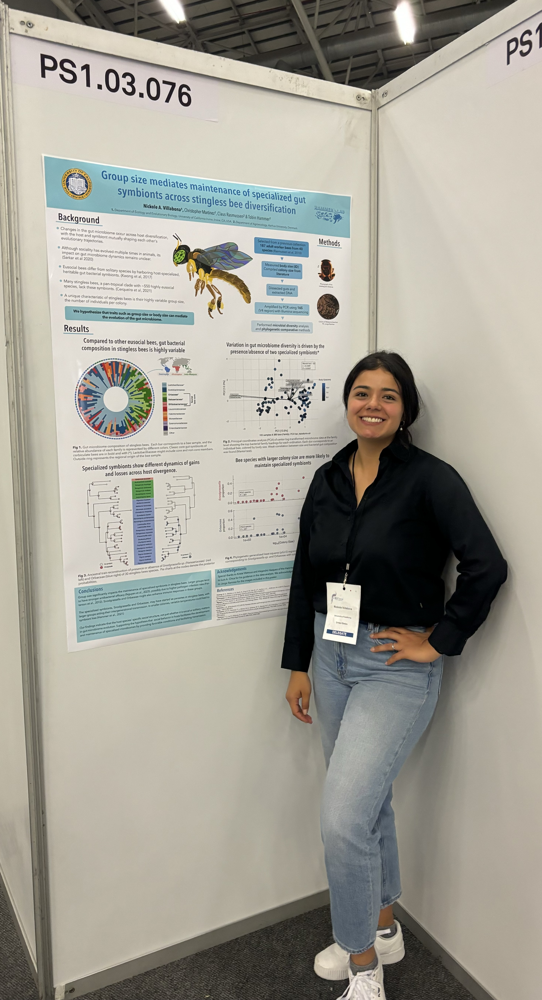
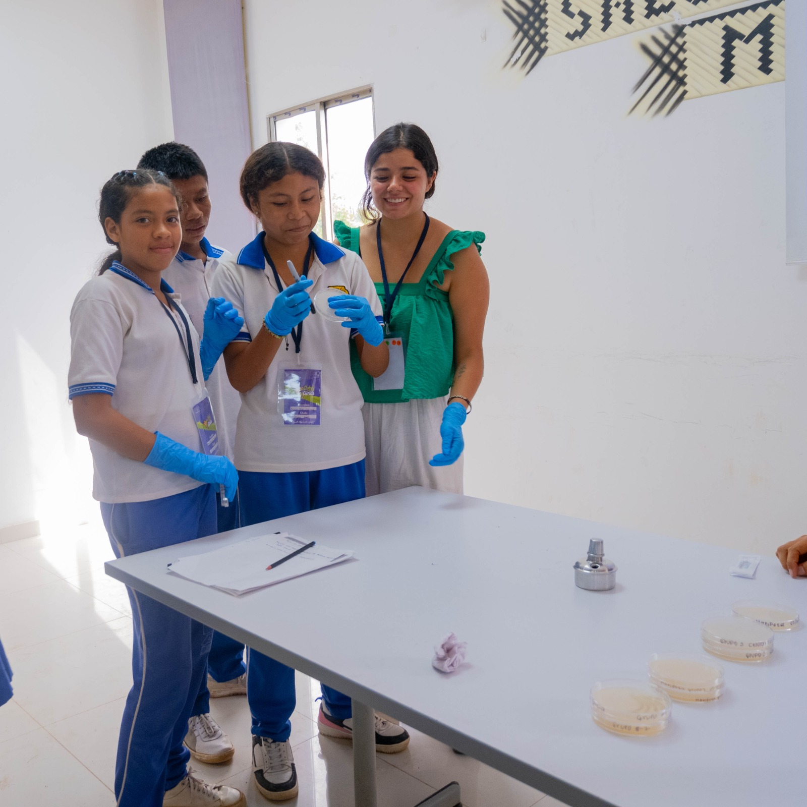

Gallery
A visual journey through my fieldwork, research, and science communication activities.

Bombus rubicundus queen in Matredonda, Colombia

Bombus hortulanus foraging

Páramo ecosystem - home to Colombia's highest bumblebee diversity

Sumapaz páramo landscape

Bombus hortulanus male in a Colombian páramo

Bumblebee field collection in Colombian páramos, 2019

Learning meliponiculture techniques at XII Congreso Mesoamericano de Abejas Nativas, Ciudad Guzmán, México 2023

Presenting at XII Congreso Mesoamericano de Abejas Nativas, Ciudad Guzmán, México 2023

Poster presentation at ISME19 International Symposium, Cape Town, South Africa 2024

Receiving the ISME Early Career Researcher Poster Award at ISME19, Cape Town, South Africa 2024

Instructor at Clubes de Ciencia Colombia - STEM activities for high-school students from rural communities, Tuchín, Colombia 2025
Lab work
Add your photo here!
DNA extraction and library prep
Microscopy
Add your photo here!
Examining bee specimens
Lab meeting
Add your photo here!
Hammer Lab group meeting
Sequencing
Add your photo here!
Preparing samples for sequencing
All photos
This tab will show all your photos once you add them!
All photos
This tab will show all your photos once you add them!